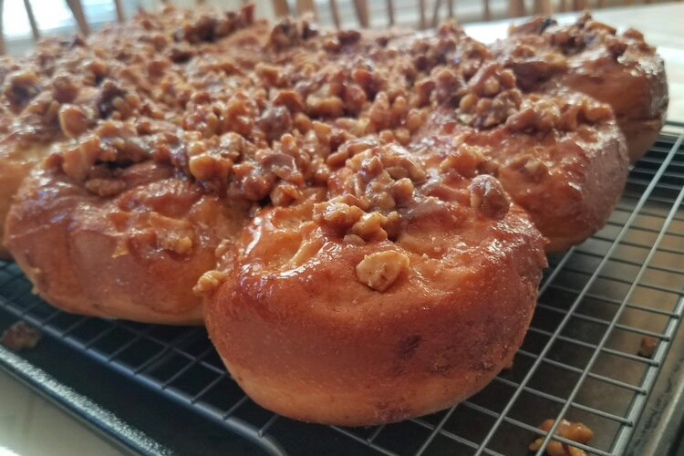
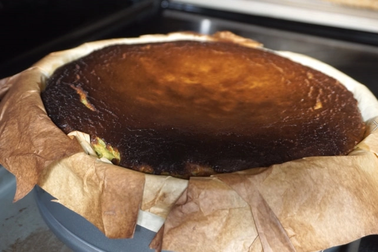
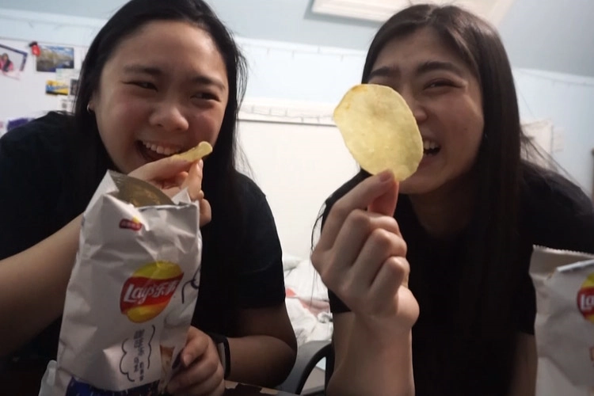
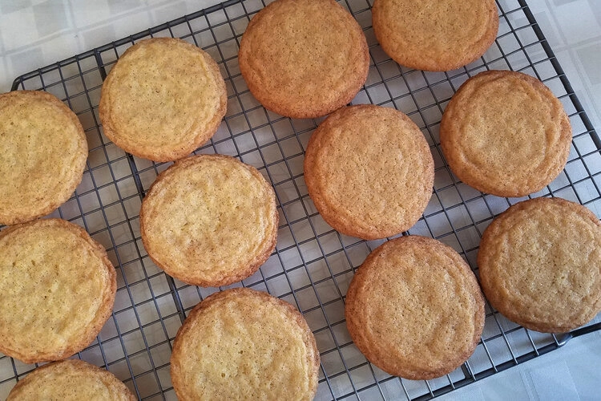
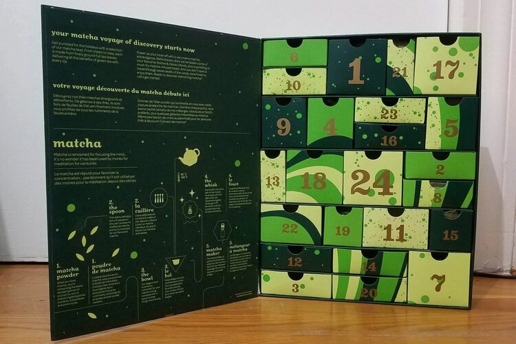
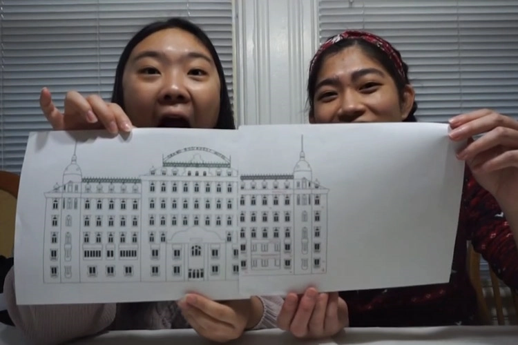
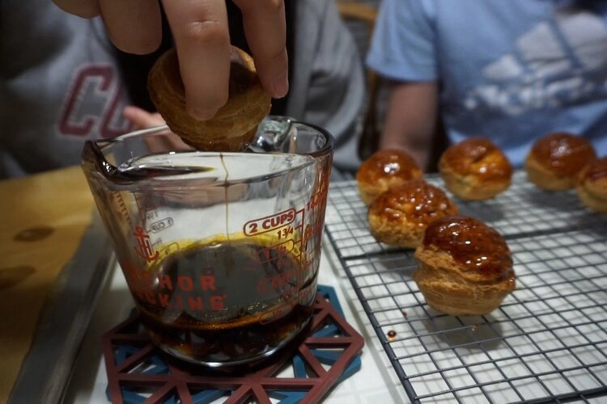
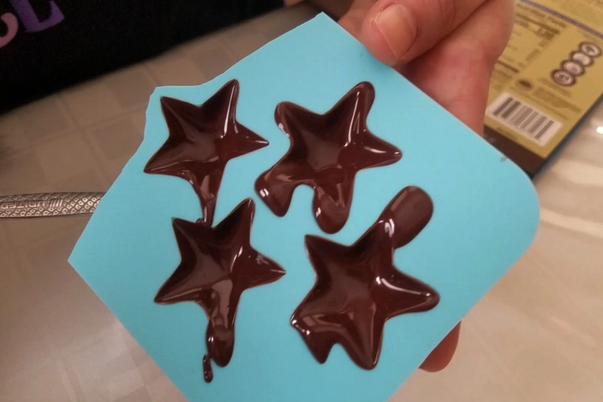
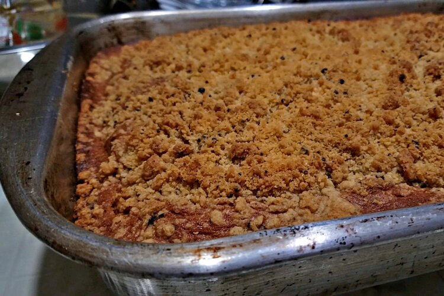
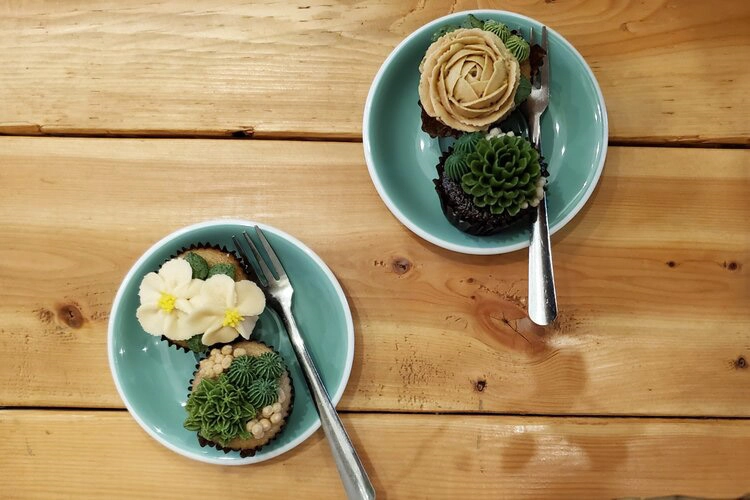

Food | 1/24/21
Who doesn’t love a warm pillowy soft sticky bun or cinnamon roll? It’s like a sweet fluffy cloud that melts in your mouth with every bite!

Food | 1/21/21
Having both a love for cheesecake and matcha, I decided that a matcha basque burnt cheesecake would be the perfect baking challenge.

Food | 1/17/21
There is nothing, absolutely nothing, we love more on a cold breezy winter day than this very thing--hotpot.

Food | 1/14/21
Have you ever wandered through the snack aisle and wondered what all of the unusual chips and snacks taste like? Well, we took our love for boba and gathered all the boba snacks we could find so you wouldn’t have to.

Food | 1/7/21
There are two things I love in baking, brown butter and cinnamon. So, as I have been meaning to make Snickerdoodles for awhile now, this was the perfect time to combine the two and make the ultimate Snickerdoodle.

Food | 12/31/20
The holiday season comes with many joys, one of which are advent calendars! Having seen these pop up every year, we decided this year was the year we’d finally try our first advent calendars.

Food | 12/25/20
Welcome to our final video in our Seven Days of Christmas Series -- that means that today is Christmas!! Christmas means many things but one of those things is cookies, more specifically, gingerbread cookies and houses.

Food | 12/23/20
For our fifth video in the Seven Days of Christmas series, we took on the “Mount Everest” recipe in the pastry world as Claire Saffitz described it--Croquembouche!

Food | 12/21/20
It's Day 3 of our Seven Days of Christmas series and this time we took a quick break from DIY crafts to bring you a classic holiday drink but with a twist!

Food | 12/10/20
After successfully making one recipe from Dessert Person and having many more recipes tagged for the future, it was clear what needed to be done.

Food | 12/3/20
We took a leaf off Bon Appetit’s YouTube Channel and thought we’d try our very own Back to Back Pastry Chef Challenge! On top of that, we got to make our very first recipe from Claire Saffitz’s Dessert Person recipe book!

Food | 11/15/20
Being a college student in NYC was kind of perfect because there was never a shortage of coffee shops and cafes nearby and we were always working, tired and in need of some caffeine.